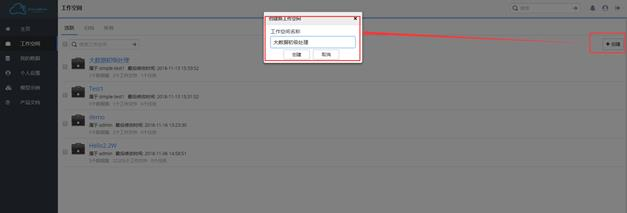
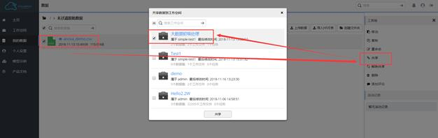
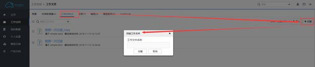
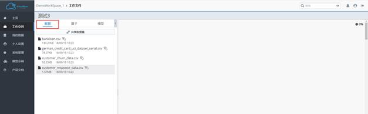
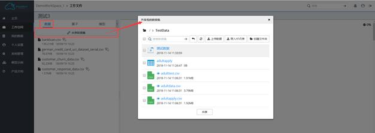
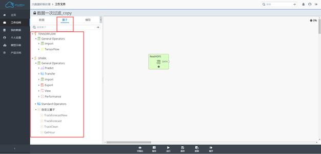
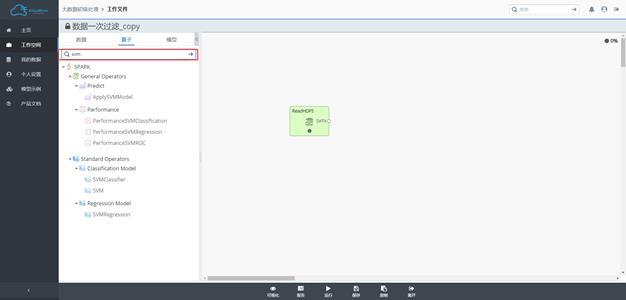

建模流程
此节将前面多章节讲解的系统功能结合起来，按照建模流程拉通顺序展示操作。大部分模块操作都是点到即止，如果需要了解模块提供的详细功能，可以根据名称查看前面的章节。
创建工作空间
创建一个工作空间准备建模环境。

关联数据
在“我的数据”模块下上传数据。
之后关联到前面创建的工作空间

创建工作文件
iCloudMiner以工作文件的形式表征数据CRISP-DM工作流，工作流直观、有序地表达上述数据挖掘过程中的各个环节。通过构建一个包含这些环节的数据分析挖掘工作流，用户以拖拽、连线、参数配置的图形界面操作方式完成数据探索和业务模型。
工作文件属于某一工作空间，进入工作空间后，点击概要页的“创建工作文件”模块可创建工作文件，也可以在进入工作空间后，通过右上方的操作栏的创建按钮即可创建工作文件。

业务建模
新建的工作文件将默认出现在工作文件列表页的最顶部，点击工作文件名称，即可跳转到工作流编辑界面，界面左侧提供了数据、算子和模型列表。
其中“数据”是指已关联到当前工作空间的数据集，也就是业务建模中直接可用的数据集。

如果此时未找到想要使用的数据，可以通过数据列表上方的“共享数据集”按钮，启动“共享数据集功能”，将数据共享到本工作空间。

而“算子”则是封装了数据读写操作、数据探索或处理函数、机器学习算法的处理单元。最后的模型则是在当前工作空间中通过WriteModel持久化的模型。我们将多种算子按功能类别进行了分组展示，可能会有多个算子组别，组别下的算子可通过组别名称左侧的三角箭头来展开或收缩，三角箭头向右表示当前组别是收缩状态（可展开），三角箭头向下则表示当前组别是展开状态（可收缩）。

在工作流编辑界面，我们可以开始数据探索和建模之旅，此时我们需要选择合适的算子，并根据建模思路进行合理的组合。
算子列表上方的搜索框可用于快速搜索选定所需算子。

从算子列表中选中算子，按住鼠标左键将其拖入编辑区域。在编辑区域中选中算子，即可查看和编辑算子参数列表。参数列表中有算子的简要功能描述，光标悬停到某个参数时，可查看该参数的简要描述。如需查看算子的详细帮助文档，可点击参数面板左上侧带圆圈的问号标志。

默认情况下，对于具备输出端口的算子，工作流运行过程不生成输出数据的预览视图，如需预览此类算子的输出，则可使用View分组下的算子，显式指定输出。对于输出端口类型为DATA的，连接DataView即可得到相应的数据预览视图；而对于输出端口类型为MODEL的，连接ModelView可得到相应的模型预览视图。
工作流编辑完成后，可通过下方的运行操作来执行工作流所代表的数据处理或建模逻辑。系统会依序执行工作流中的算子。每个算子有一个运行状态标识，“灰色”表示尚未提交运行，“黄色”表示正在运行或等待运行中，红色表示运行出错。

对于不具备输出端口的算子，则可在该算子成功运行后右键点击其VIEW类型的输出端口，以查看预览视图。我们为数值型、字符型数据提供了基本的内容预览、各种统计曲线，同时也提供部分模型预览视图。
1) 预览算子输出数据视图：

2) 预览算子输出模型视图：

工作流执行完成后，其运行历史保存在报告中，我们提供最新一次运行历史所生成的预览视图。

Performance系列算子提供了数值指标或评估曲线的方式来实现对模型质量的评估，训练过程得到的模型，我们可根据模型或评估指标的不同，选择不同的Performance算子，对模型预测结果（ApplyModel的输出结果）进行评估。